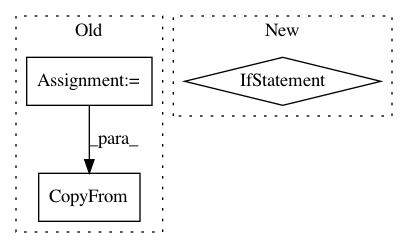

7f6db8878558804f8d0a0e53de4c4b71397473f4,server/bert_serving/server/graph.py,,convert_variables_to_constants,#Any#Any#Any#Any#Any#Any#Any#,154
Before Change
if "dtype" in input_node.attr:
dtype = input_node.attr["dtype"]
if use_fp16 and dtype.type == types_pb2.DT_FLOAT:
new_dtype = attr_value_pb2.AttrValue()
new_dtype.CopyFrom(dtype)
new_dtype.type = types_pb2.DT_HALF
output_node.attr["dtype"].CopyFrom(new_dtype)
output_graph_def.node.extend([output_node])
output_graph_def.library.CopyFrom(inference_graph.library)
logger.info("Converted %d variables to const ops.", how_many_converted)
After Change
patch_dtype(input_node, "dtype", output_node)
// fix embedding lookup
if input_node.name.endswith("embedding_lookup") and input_node.op == "GatherV2":
patch_dtype(input_node, "Tparams", output_node)
if input_node.name.endswith("embedding_lookup/Identity") and input_node.input == "embedding_lookup":
patch_dtype(input_node, "T", output_node)
output_graph_def.node.extend([output_node])
In pattern: SUPERPATTERN
Frequency: 3
Non-data size: 3
Instances
Project Name: hanxiao/bert-as-service
Commit Name: 7f6db8878558804f8d0a0e53de4c4b71397473f4
Time: 2019-01-18
Author: hanhxiao@tencent.com
File Name: server/bert_serving/server/graph.py
Class Name:
Method Name: convert_variables_to_constants
Project Name: hanxiao/bert-as-service
Commit Name: fe4636e1cadad7f7aa6892f3e4e854aa80d94a0f
Time: 2019-01-18
Author: hanhxiao@tencent.com
File Name: server/bert_serving/server/graph.py
Class Name:
Method Name: convert_variables_to_constants
Project Name: dpressel/mead-baseline
Commit Name: 2e2cd37c84d80ca4f1a1384d75f1b183f1185ee1
Time: 2019-11-12
Author: blester125@gmail.com
File Name: python/baseline/tf/remote.py
Class Name: RemoteModelGRPCTensorFlowPreproc
Method Name: create_request